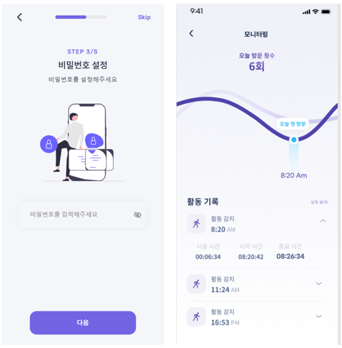

아이디어 창작 동기
최근 조사 결과에 따르면 한국에서는 65세 이상 노인 인구가 총 인구의 15.7%를 차지하고 있으며, 이 중에서도 혼자 살고 있는 노인은 약 30%로 나타났습니다. 또한 장애인 인구는 약 250만명으로 국민 전체의 5% 이상이며, 그 중에서도 심한 장애를 가진 분들은 약 78만명으로 전체 장애인의 30%가 넘는 수치입니다.또한 저는 혼자 사는 어르신들이나 노인복지시설에 있는 어르신들의 고독사 사례를 접하면서 이 문제에 대해 생각해 보게 되었습니다. 기존에 있는 고가의 고독사 방지 제품들은 가격대가 100만원~200만원대로 소비자가 구매하기에는 매우 부담되는 가격이 가장 큰 문제였습니다, 기존에 있던 방식은 사용자의 일상 생활 패턴이나 상황을 고려하지 않고 일정한 간격으로 알림을 보내는 방식이기 때문에, 실제로 사용자의 안전 상황에 대응하기 어려웠습니다. 이에 저는 저렴한 가격으로 보다 많은 사람들이 사용할 수 있는 ”이공지능 고독사 방지 예방 키트“를 개발하고자 하였습니다. 또한, 사소한 상황에서의 사고 가능성을 미리 예측하여 움직임이 감지가 안될 경우 보호자나 응급 구조대에 자동으로 비상문자를 전송하고, 스마트폰 사용이 미숙한 노인분들과 장애인분들도 쉽게 사용할 수 있는 기술력을 가진 제품을 만들고자 하였습니다. 이를 통해 보다 많은 고독사 예방에 기여하고자 합니다.

개발 배경과 만들고자 하는 이유
한국의 노인 인구는 65세 이상이 전체 인구의 15.7%를 차지하며, 이 중 30%는 혼자 살고 있습니다. 또한 행정안전부의 통계에 따르면 2023년에 조사된 1인 가구가 무려 972만명이 살고 있고, 앞으로도 증가한다는 전망입니다. 이에 따라 고독사 또는 갇힘 사고의 수도 점점 증가하고 있습니다. 하지만 기존의 고독사 방지 제품은 가격이 터무니없이 비싸거나 사용자의 일상 생활을 고려하지 않아 효율적이지 못했습니다. 이러한 문제를 해결하고 더 많은 사람들이 이용할 수 있도록 저렴하고 사용자 친화적인 고독사 또는 갇힘 사도 방지 알림 시스템을 개발하고자 합니다. 이를 통해 독거노인분들과 1인가구의 안전을 보호하고 고독사를 예방하여 삶의 질을 향상시키고자 합니다.
용도 및 효과
장애인을 위한 고독사 방지 알림 시스템은 보호자의 지원이 제한적인 상황에서도 신속한 대처가 가능하며, 장애인의 안전과 생활의 질을 높일 수 있습니다. 현재 독거 노인과 1인 가구 비율이 증가하면서 고독사 사고가 증가하는 추세이고, 고독사나 갇힘 사고 사망 사고도 발생하고 있다는 사실을 감안할 때, 장애인뿐만 아니라 노인들이나 1인 가구의 사람들도 이러한 고독사 방지 알림 시스템을 활용하여 보다 안전하게 생활할 수 있을 것입니다. 특히, 장애인들의 경우 일상 생활에서 보호자의 지원이 필요하지만 보호자의 불참 시 비상 상황에서 생명을 위협하는 상황이 발생할 수 있습니다. 이러한 상황에서 “ 인공지능 고독사 예방 키트“를 활용하면 사용자가 움직임이 감지되지 않은 경우, 즉 사소한 상황에서의 사고 발생 가능성을 미리 예측할 수 있습니다. 이러한 예측력을 바탕으로, 움직임이 감지가 안될 경우 보호자나 응급 구조대에 자동으로 비상문자를 전송하여 신속한 대처가 가능합니다. 따라서, 고독사 방지 알림 시스템은 노인이나 1인 가구의 사람들, 장애인 특히 보호자의 지원이 제한적인 상황에서도 신속한 대처가 가능하며, 장애인의 안전과 생활의 질을 높일 수 있는 중요한 기술적인 솔루션이라고 할 수 있습니다.
기존 제품과의 차별성
기존에 있던 고독사 방지 아이템은 주로 일정 시간마다 알림을 보내는 방식이었습니다 또한 가격대가 100만원~200만원 사이로 소비자가 구매하기에는 부담스로운 가격을 형성하고 있습니다. 그러나 이 방식은 사용자의 일상 생활 패턴이나 상황을 고려하지 않고 일정한 간격으로 알림을 보내는 방식이기 때문에, 실제로 사용자의 안전 상황에 대응하기 어려웠습니다. 반면 인공지능 고독사 예방 키트는 사소한 상황에서의 사고 가능성을 미리 예측하여 움직임이 감지가 안될 경우 보호자나 응급 구조대에 자동으로 비상문자를 전송하고, 실제로 사용자가 위험 상황에 처한 경우에만 알림을 보내기 때문에 더욱 정확하고 효과적입니다. 또한 신체 움직임 감지 등의 기술을 활용하여 사용자의 취약성을 고려하여 상황 대처를 지원하기 때문에, 보다 개인 맞춤형 서비스를 제공할 수 있습니다. 따라서 기존의 고독사 방지 아이템과 차별화된 장애인을 위한 고독사 방지 알림 시스템은 보다 안전하고 효과적인 서비스를 제공할 수 있으며, 사용자들의 안전과 삶의 질 향상에 큰 기여를 할 것으로 기대됩니다.
